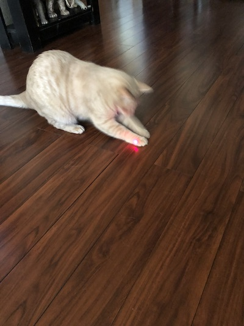
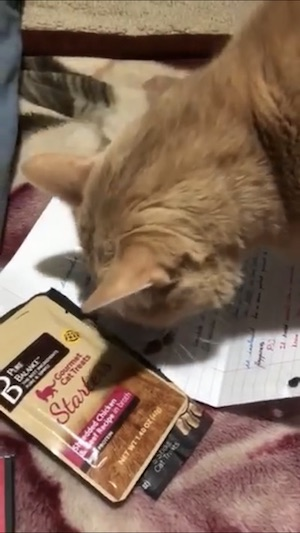
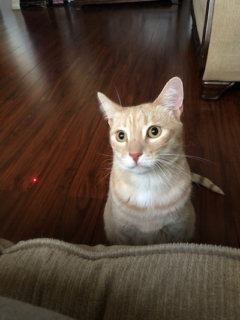
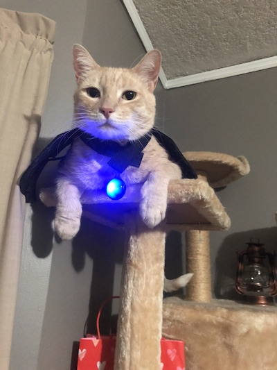
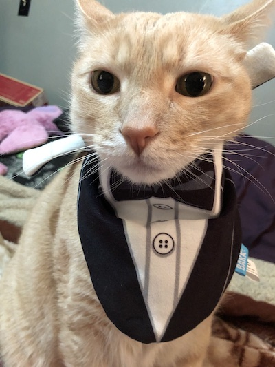
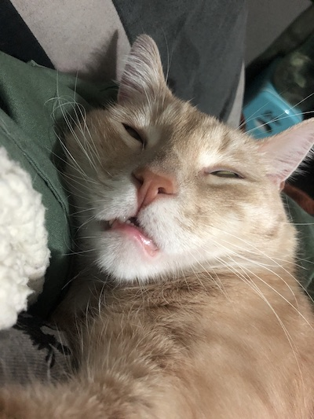
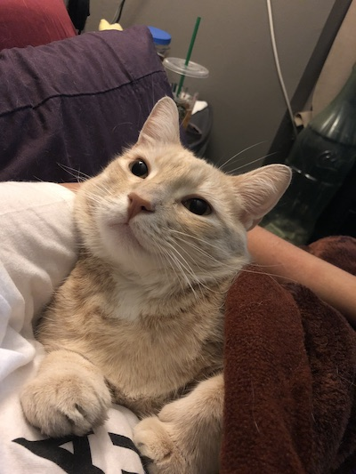

This is the color paleturquoise, and the background color for the entire page is teal.
Click on my image to read about us cats.Click on my image to learn about color for this site.Click on my image to learn about coast redwoods.Click on my image to laugh at funny Tik Tok videos.Cick on my image to see a coast redwood leaf.